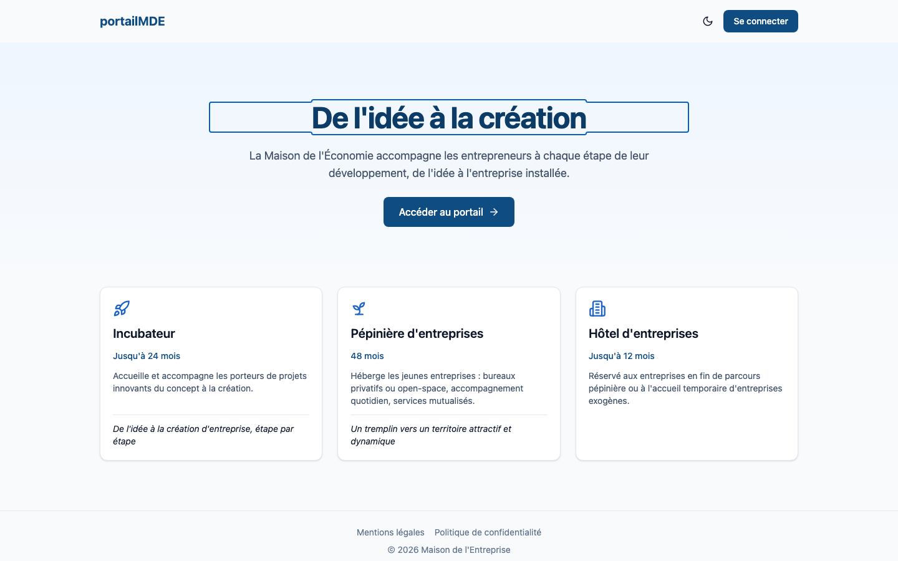

Le réseau numérique d'une pépinière d'entreprises
Un portail unique pour que les entreprises hébergées se trouvent, échangent, s'inscrivent aux formations et suivent la vie de la pépinière.

Fonctionnalités
Pensé pour les équipes de la pépinière comme pour les entreprises accueillies.
Annuaire
Trombinoscope des personnes et des entreprises, avec recherche et fiches détaillées.
Messagerie
Conversations directes et de groupe en temps réel, pièces jointes et notifications.
Agenda
Événements, invitations avec réponse, et export au format calendrier.
Formations
Catalogue, sessions, intérêt et inscriptions, avec suivi pour les gestionnaires.
Actualités
Flux d'actualités de la pépinière et articles enregistrés en favoris.
Administration
Rôles et droits fins, gestion des entreprises et des comptes, contenu éditable.
Sous le capot
API REST et WebSocket, authentification JWT, suite de tests complète et déploiement automatisé.
- FastAPI
- SQLAlchemy 2
- PostgreSQL
- React
- Vite
- Tailwind CSS
- Docker Compose
- GitHub Actions
- Playwright